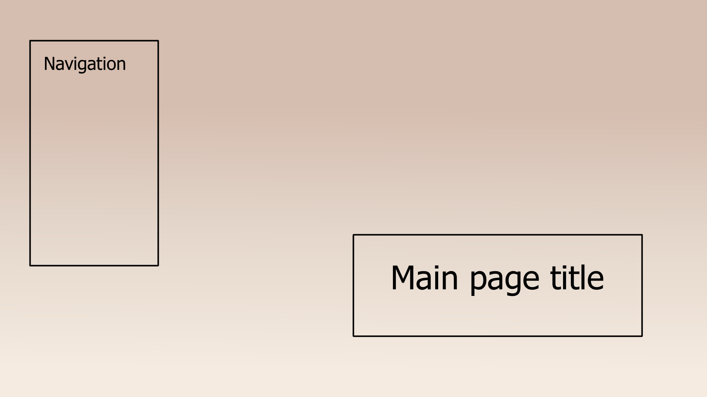
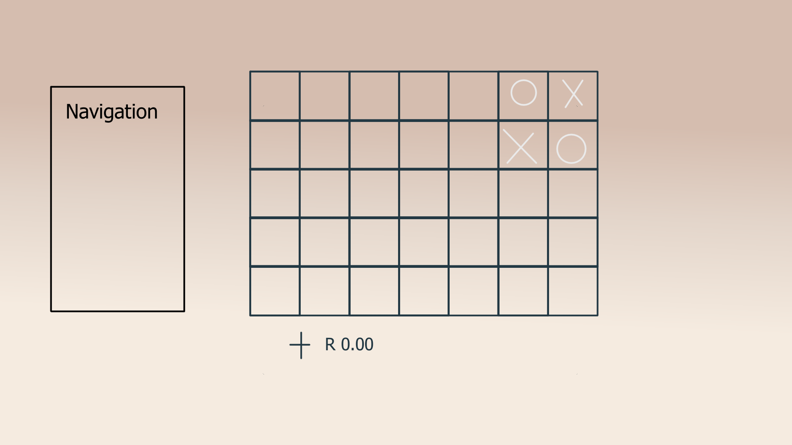

This is the main page, all the pages have the same layout and colour scheme. The simplicity and aesthetic are explained in the style guide. The reason I used the navigation I did is because it is simplistic and has a clean classic look to it.

This second page is the sub-pages such as the blog posts and internet art.

Internet art is very barebones and I am playing off of the simplicity of Tic-tac-toe where you have limited space and moves to create art and I used the example from React. I plan to expand on the art and see if I'm able to add in a money system and a colour system or make the art more flexible rather than just Xs and O's alternating.